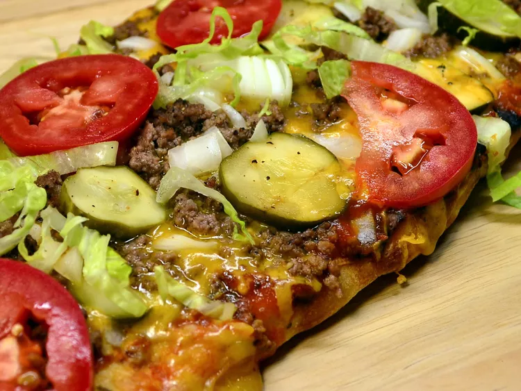

True Cheeseburger Pizza

This cheeseburger pizza is a unique twist on two favorites: pizza and cheeseburgers! It is super fast to make, and you can easily add your favorite burger toppings, such as lettuce and tomato. This is a family favorite and disappears fast.
Ingredients:
- 0,75 pound ground beef chuck
- 0,25 teaspoon salt
- 0,25 teaspoon ground black pepper
- 0,65 cup ketchup
- 2 tablespoons prepared yellow mustard
- 1 (14 ounce) pre-baked pizza crust
- 1,5 cups shredded mozzarella cheese
- 1 cup shredded sharp Cheddar cheese
- half cup chopped onions
- half cup dill pickle slices
- 1 cup shredded lettuce (Optional)
- 1 cup diced tomatoes (Optional)
Steps:
- Preheat the oven to 375 degrees F (190 degrees C). Heat a large skillet over medium-high heat. Cook and stir beef, salt, and pepper in the hot skillet until meat is browned and crumbly, 5 to 7 minutes; drain and discard grease. Set aside.
- Mix together ketchup and mustard in a small bowl; spread mixture over pizza crust. Sprinkle mozzarella and Cheddar cheese on top and cover with cooked beef and onions. Transfer pizza to a large baking sheet.
- Bake in the preheated oven until cheese is melted, about 20 minutes. Top with pickle slices and allow pizza to cool for 5 minutes. Top with lettuce and tomatoes before slicing and serving.